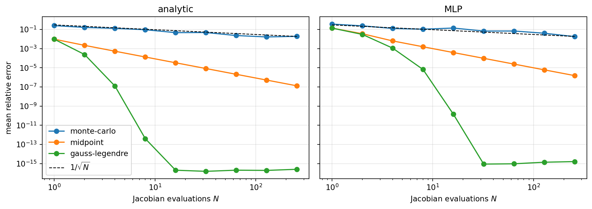

Show imports
import numpy as np
import torch
from torch.func import jacrev, vmap
import matplotlib.pyplot as plt
torch.manual_seed(0)
torch.set_default_dtype(torch.float64)
n = 3Etienne Meunier
July 15, 2026
Let’s say we have a function \(D : \mathbb R^n \to \mathbb R^n\), continuously differentiable, and we want to compute
\[ D(\tilde z) - D(z) \]
Then we can setup a function :
\[ \gamma(s) = z + s \, \delta z \implies \gamma'(s) = \delta z \]
Where \(\delta z = \tilde z - z\)
and \(g(s) = D(\gamma(s))\)
Thus \(g'(s) = J_D(\gamma(s))\gamma'(s)\) and \(g(s=1) = D(\tilde z)\), \(g(s=0) = D(z)\).
We can write :
\[ D(\tilde z) - D(z) = \int_{s=0}^{s=1} J_D(z + s \, \delta z ) \, \delta z \, ds = \underbrace{\left[\int_{s=0}^{s=1} J_D(z + s \, \delta z ) \, ds\right]}_{\bar A(z, \tilde z)} \delta z \]
The bracket is the whole point. It is a matrix — the Jacobian averaged along the segment joining \(z\) to \(\tilde z\) — and it satisfies
\[ D(\tilde z) - D(z) = \bar A(z, \tilde z) \, \delta z \]
exactly, for any \(\delta z\), however large. This is not a first-order approximation. \(\bar A\) is a secant operator: unlike the tangent \(J_D(z)\), it depends on both endpoints.
For a scalar output this identity is exactly Integrated Gradients (Sundararajan et al., 2017), with \(z\) playing the role of the baseline.
The integral is one-dimensional, so we have a choice of quadrature. We can estimate it with monte-carlo :
\[ \int_{s=0}^{s=1} J_D(z + s \, \delta z ) \, ds \approx \frac{1}{N}\sum_{s_i \sim \mathcal U(0, 1)} J_D(z + s_i \, \delta z ) \]
but for a 1-D integral this converges at \(1/\sqrt N\), which is slow. Deterministic nodes do much better on a smooth \(D\). The honest argument for monte-carlo is not accuracy: sampling \(s \sim \mathcal U(0,1)\) is unbiased, so if this sits inside a training loss a single sample per step still gives unbiased gradients.
Let’s measure all of it.
Two maps \(\mathbb R^3 \to \mathbb R^3\): an analytic one whose Jacobian we can derive by hand, and a small tanh MLP (weights scaled up so it is visibly nonlinear).
def D_analytic(z):
z0, z1, z2 = z[..., 0], z[..., 1], z[..., 2]
return torch.stack([
torch.sin(z0) + z1 * z2,
torch.exp(0.5 * z0) - z2 ** 2,
torch.tanh(z1) + z0 * z2,
], dim=-1)
def J_analytic_by_hand(z):
z0, z1, z2 = z[0], z[1], z[2]
return torch.tensor([
[torch.cos(z0), z2, z1],
[0.5 * torch.exp(0.5 * z0), torch.zeros(()), -2 * z2],
[z2, 1 - torch.tanh(z1) ** 2, z0],
])
mlp = torch.nn.Sequential(
torch.nn.Linear(n, 32), torch.nn.Tanh(),
torch.nn.Linear(32, 32), torch.nn.Tanh(),
torch.nn.Linear(32, n),
)
for p in mlp.parameters():
p.data *= 2.0
D_net = lambda z: mlp(z)jacrev gives the Jacobian at one point; vmap evaluates it at every quadrature node at once. Weighting those Jacobians and summing gives \(\bar A\) directly.
def average_jacobian(D, z, dz, s, w):
"""The bracket: sum_i w_i J_D(z + s_i dz), an approximation of A_bar."""
J = vmap(jacrev(D))(z + s[:, None] * dz) # (N, n, n)
return (w[:, None, None] * J).sum(0) # (n, n)
def estimate_difference(D, z, dz, s, w):
return average_jacobian(D, z, dz, s, w) @ dz
def nodes_monte_carlo(N):
return torch.rand(N), torch.full((N,), 1.0 / N)
def nodes_midpoint(N):
return (torch.arange(N) + 0.5) / N, torch.full((N,), 1.0 / N)
def nodes_gauss_legendre(N):
x, w = np.polynomial.legendre.leggauss(N) # on [-1, 1]
return torch.tensor(0.5 * (x + 1)), torch.tensor(0.5 * w) # mapped to [0, 1]First, a check that autograd computes the Jacobian we think it does:
autograd vs hand-derived Jacobian, max abs difference: 0.0e+00We compare the estimate \(\bar A \, \delta z\) against the true difference \(D(z + \delta z) - D(z)\), averaged over 10 random pairs, as a function of the number of Jacobian evaluations.
def mean_rel_error(D, rule, N, pairs):
errs = []
for z, dz in pairs:
s, w = rule(N)
true = D(z + dz) - D(z)
errs.append((estimate_difference(D, z, dz, s, w) - true).norm() / true.norm())
return torch.stack(errs).mean().item()
pairs = [(torch.randn(n), torch.randn(n)) for _ in range(10)]
rules = [("monte-carlo", nodes_monte_carlo),
("midpoint", nodes_midpoint),
("gauss-legendre", nodes_gauss_legendre)]
Ns = [1, 2, 4, 8, 16, 32, 64, 128, 256]
curves = {}
for name, D in [("analytic", D_analytic), ("MLP", D_net)]:
for rule_name, rule in rules:
curves[(name, rule_name)] = [mean_rel_error(D, rule, N, pairs) for N in Ns]
print(f"{'N':>5} " + " ".join(f"{r:>15}" for r, _ in rules) + " (MLP)")
for i, N in enumerate(Ns):
print(f"{N:>5} " + " ".join(f"{curves[('MLP', r)][i]:15.2e}" for r, _ in rules)) N monte-carlo midpoint gauss-legendre (MLP)
1 3.64e-01 1.39e-01 1.39e-01
2 2.39e-01 3.59e-02 3.05e-02
4 1.28e-01 6.38e-03 1.13e-03
8 1.07e-01 1.57e-03 6.69e-06
16 1.41e-01 3.90e-04 1.44e-10
32 6.82e-02 9.74e-05 8.78e-16
64 6.91e-02 2.43e-05 9.46e-16
128 4.03e-02 6.09e-06 1.38e-15
256 1.80e-02 1.52e-06 1.61e-15fig, axes = plt.subplots(1, 2, figsize=(11, 4), sharey=True)
for ax, name in zip(axes, ["analytic", "MLP"]):
for rule_name, _ in rules:
ax.loglog(Ns, np.clip(curves[(name, rule_name)], 1e-17, None),
marker="o", label=rule_name)
ax.loglog(Ns, 0.3 / np.sqrt(Ns), "k--", lw=1, label=r"$1/\sqrt{N}$")
ax.set_title(name)
ax.set_xlabel("Jacobian evaluations $N$")
ax.grid(alpha=.3)
axes[0].set_ylabel("mean relative error")
axes[0].legend()
plt.tight_layout()
plt.show()
The identity is confirmed: gauss-legendre drives the error to machine precision (~\(10^{-15}\)) with about 16 Jacobian evaluations, on the MLP as well as the analytic map — both are smooth, so the quadrature converges spectrally.
Monte-carlo is the loser, and by a wide margin. It sits on the \(1/\sqrt N\) line: 256 evaluations to still be around 2%, where midpoint is already near \(10^{-6}\) and gauss-legendre is at machine precision. It is also visibly noisy — the error is not even monotone in \(N\). For a one-dimensional integral, sampling is the wrong instinct; keep it only if you need the unbiasedness.
This is what \(\bar A\) buys over the tangent \(J_D(z)\). We fix a direction and grow \(\|\delta z\|\):
z = torch.randn(n)
direction = torch.randn(n)
direction /= direction.norm()
s, w = nodes_gauss_legendre(64)
print(f"{'||dz||':>8} {'path integral':>16} {'tangent J(z) dz':>18}")
for scale in [0.01, 0.1, 0.5, 1.0, 2.0, 4.0]:
dz = scale * direction
true = D_analytic(z + dz) - D_analytic(z)
e_path = (estimate_difference(D_analytic, z, dz, s, w) - true).norm() / true.norm()
e_tan = (jacrev(D_analytic)(z) @ dz - true).norm() / true.norm()
print(f"{scale:8.2f} {e_path:16.1e} {e_tan:18.1e}") ||dz|| path integral tangent J(z) dz
0.01 1.1e-14 3.7e-03
0.10 1.3e-15 3.7e-02
0.50 1.8e-16 1.8e-01
1.00 7.8e-17 3.4e-01
2.00 7.0e-17 5.8e-01
4.00 6.8e-17 8.1e-01The tangent linearisation degrades exactly as expected, its error growing with the step size until it is meaningless. The path integral stays at machine precision no matter how far apart the two points are — which is the entire content of the trick.
---
title: "The function difference trick — an exact linearisation between two points"
author: "Etienne Meunier"
date: today
format:
html:
number-sections: true
code-fold: show
code-tools: true
---
Let's say we have a function $D : \mathbb R^n \to \mathbb R^n$, continuously differentiable, and we want to compute
$$
D(\tilde z) - D(z)
$$
Then we can setup a function :
$$
\gamma(s) = z + s \, \delta z \implies \gamma'(s) = \delta z
$$
Where $\delta z = \tilde z - z$
and $g(s) = D(\gamma(s))$
Thus $g'(s) = J_D(\gamma(s))\gamma'(s)$ and $g(s=1) = D(\tilde z)$, $g(s=0) = D(z)$.
We can write :
$$
D(\tilde z) - D(z) = \int_{s=0}^{s=1} J_D(z + s \, \delta z ) \, \delta z \, ds = \underbrace{\left[\int_{s=0}^{s=1} J_D(z + s \, \delta z ) \, ds\right]}_{\bar A(z, \tilde z)} \delta z
$$
The bracket is the whole point. It is a *matrix* — the Jacobian averaged along the segment joining $z$ to $\tilde z$ — and it satisfies
$$
D(\tilde z) - D(z) = \bar A(z, \tilde z) \, \delta z
$$
**exactly**, for any $\delta z$, however large. This is not a first-order approximation. $\bar A$ is a secant operator: unlike the tangent $J_D(z)$, it depends on *both* endpoints.
::: {.callout-note collapse="true"}
## Where you have seen this before
For a scalar output this identity is exactly [Integrated Gradients](https://arxiv.org/abs/1703.01365) (Sundararajan et al., 2017), with $z$ playing the role of the baseline.
:::
# Estimating the integral
The integral is one-dimensional, so we have a choice of quadrature. We can estimate it with monte-carlo :
$$
\int_{s=0}^{s=1} J_D(z + s \, \delta z ) \, ds \approx \frac{1}{N}\sum_{s_i \sim \mathcal U(0, 1)} J_D(z + s_i \, \delta z )
$$
but for a 1-D integral this converges at $1/\sqrt N$, which is slow. Deterministic nodes do much better on a smooth $D$. The honest argument for monte-carlo is not accuracy: sampling $s \sim \mathcal U(0,1)$ is **unbiased**, so if this sits inside a training loss a single sample per step still gives unbiased gradients.
Let's measure all of it.
# The experiment
```{python}
#| label: imports
#| code-fold: true
#| code-summary: "Show imports"
import numpy as np
import torch
from torch.func import jacrev, vmap
import matplotlib.pyplot as plt
torch.manual_seed(0)
torch.set_default_dtype(torch.float64)
n = 3
```
Two maps $\mathbb R^3 \to \mathbb R^3$: an analytic one whose Jacobian we can derive by hand, and a small tanh MLP (weights scaled up so it is visibly nonlinear).
```{python}
#| label: maps
def D_analytic(z):
z0, z1, z2 = z[..., 0], z[..., 1], z[..., 2]
return torch.stack([
torch.sin(z0) + z1 * z2,
torch.exp(0.5 * z0) - z2 ** 2,
torch.tanh(z1) + z0 * z2,
], dim=-1)
def J_analytic_by_hand(z):
z0, z1, z2 = z[0], z[1], z[2]
return torch.tensor([
[torch.cos(z0), z2, z1],
[0.5 * torch.exp(0.5 * z0), torch.zeros(()), -2 * z2],
[z2, 1 - torch.tanh(z1) ** 2, z0],
])
mlp = torch.nn.Sequential(
torch.nn.Linear(n, 32), torch.nn.Tanh(),
torch.nn.Linear(32, 32), torch.nn.Tanh(),
torch.nn.Linear(32, n),
)
for p in mlp.parameters():
p.data *= 2.0
D_net = lambda z: mlp(z)
```
`jacrev` gives the Jacobian at one point; `vmap` evaluates it at every quadrature node at once. Weighting those Jacobians and summing gives $\bar A$ directly.
```{python}
#| label: estimator
def average_jacobian(D, z, dz, s, w):
"""The bracket: sum_i w_i J_D(z + s_i dz), an approximation of A_bar."""
J = vmap(jacrev(D))(z + s[:, None] * dz) # (N, n, n)
return (w[:, None, None] * J).sum(0) # (n, n)
def estimate_difference(D, z, dz, s, w):
return average_jacobian(D, z, dz, s, w) @ dz
def nodes_monte_carlo(N):
return torch.rand(N), torch.full((N,), 1.0 / N)
def nodes_midpoint(N):
return (torch.arange(N) + 0.5) / N, torch.full((N,), 1.0 / N)
def nodes_gauss_legendre(N):
x, w = np.polynomial.legendre.leggauss(N) # on [-1, 1]
return torch.tensor(0.5 * (x + 1)), torch.tensor(0.5 * w) # mapped to [0, 1]
```
First, a check that autograd computes the Jacobian we think it does:
```{python}
#| label: sanity
z_probe = torch.randn(n)
gap = (jacrev(D_analytic)(z_probe) - J_analytic_by_hand(z_probe)).abs().max()
print(f"autograd vs hand-derived Jacobian, max abs difference: {gap:.1e}")
```
## How fast does the estimate converge?
We compare the estimate $\bar A \, \delta z$ against the true difference $D(z + \delta z) - D(z)$, averaged over 10 random pairs, as a function of the number of Jacobian evaluations.
```{python}
#| label: convergence
def mean_rel_error(D, rule, N, pairs):
errs = []
for z, dz in pairs:
s, w = rule(N)
true = D(z + dz) - D(z)
errs.append((estimate_difference(D, z, dz, s, w) - true).norm() / true.norm())
return torch.stack(errs).mean().item()
pairs = [(torch.randn(n), torch.randn(n)) for _ in range(10)]
rules = [("monte-carlo", nodes_monte_carlo),
("midpoint", nodes_midpoint),
("gauss-legendre", nodes_gauss_legendre)]
Ns = [1, 2, 4, 8, 16, 32, 64, 128, 256]
curves = {}
for name, D in [("analytic", D_analytic), ("MLP", D_net)]:
for rule_name, rule in rules:
curves[(name, rule_name)] = [mean_rel_error(D, rule, N, pairs) for N in Ns]
print(f"{'N':>5} " + " ".join(f"{r:>15}" for r, _ in rules) + " (MLP)")
for i, N in enumerate(Ns):
print(f"{N:>5} " + " ".join(f"{curves[('MLP', r)][i]:15.2e}" for r, _ in rules))
```
```{python}
#| label: fig-convergence
#| fig-cap: "Mean relative error of the estimated difference. Monte-carlo tracks the $1/\\sqrt{N}$ reference; gauss-legendre reaches machine precision with ~16 nodes."
#| code-fold: true
#| code-summary: "Show plotting code"
fig, axes = plt.subplots(1, 2, figsize=(11, 4), sharey=True)
for ax, name in zip(axes, ["analytic", "MLP"]):
for rule_name, _ in rules:
ax.loglog(Ns, np.clip(curves[(name, rule_name)], 1e-17, None),
marker="o", label=rule_name)
ax.loglog(Ns, 0.3 / np.sqrt(Ns), "k--", lw=1, label=r"$1/\sqrt{N}$")
ax.set_title(name)
ax.set_xlabel("Jacobian evaluations $N$")
ax.grid(alpha=.3)
axes[0].set_ylabel("mean relative error")
axes[0].legend()
plt.tight_layout()
plt.show()
```
The identity is confirmed: gauss-legendre drives the error to machine precision (~$10^{-15}$) with about 16 Jacobian evaluations, on the MLP as well as the analytic map — both are smooth, so the quadrature converges spectrally.
Monte-carlo is the loser, and by a wide margin. It sits on the $1/\sqrt N$ line: 256 evaluations to still be around 2%, where midpoint is already near $10^{-6}$ and gauss-legendre is at machine precision. It is also visibly noisy — the error is not even monotone in $N$. For a one-dimensional integral, sampling is the wrong instinct; keep it only if you need the unbiasedness.
## Exact, not first-order
This is what $\bar A$ buys over the tangent $J_D(z)$. We fix a direction and grow $\|\delta z\|$:
```{python}
#| label: stepsize
z = torch.randn(n)
direction = torch.randn(n)
direction /= direction.norm()
s, w = nodes_gauss_legendre(64)
print(f"{'||dz||':>8} {'path integral':>16} {'tangent J(z) dz':>18}")
for scale in [0.01, 0.1, 0.5, 1.0, 2.0, 4.0]:
dz = scale * direction
true = D_analytic(z + dz) - D_analytic(z)
e_path = (estimate_difference(D_analytic, z, dz, s, w) - true).norm() / true.norm()
e_tan = (jacrev(D_analytic)(z) @ dz - true).norm() / true.norm()
print(f"{scale:8.2f} {e_path:16.1e} {e_tan:18.1e}")
```
The tangent linearisation degrades exactly as expected, its error growing with the step size until it is meaningless. The path integral stays at machine precision no matter how far apart the two points are — which is the entire content of the trick.